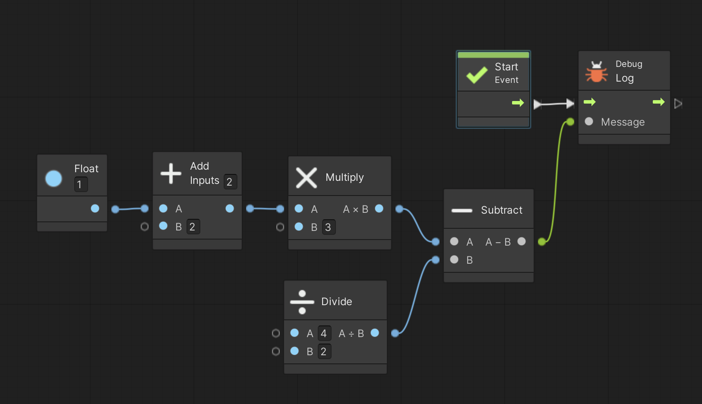

次に足し算などの演算や乱数について説明します。
まず準備です。
演算テスト用に別の Script Graph を用意します。
Scripts フォルダの中に入り、空いている部分を右クリックしてメニューを表示し、Create → Visual Scripting → Script Graph を選ぶ
Scripts フォルダ内に「New Script Graph」というアセットが出来るので「Enzan Script」に名前を変更する
ヒエラルキーの PROGRAM をクリックしてインスペクタを表示する
Script Machine の Graph の Hensu Script と書いてあるセルに Enzan Script をドロップする
足し算、掛け算、割り算などの演算もユニットで表されます。
代表的な演算用ユニットの名前と検索方法を表1に示します。
もし Subtract とか Multiply みたいな難しい単語を忘れた時はユニット選択ダイアログを Math → Generic とたどっていけばユニットが見つかります。
| ユニット名 | 意味 | 検索方法 |
| ＋ Add (in Math/Generic) | 足し算 | add |
| − Subtract (in Math/Generic) | 引き算 | subtract |
| Ｘ Multiply (in Math/Generic) | 掛け算 | multiply |
| ÷ Divide (in Math/Generic) | 割り算 | divide |
| ％ Modulo (in Math/Generic) | 剰余(割り算の余り) | modulo |
では試しに (1+2)*3 - 4/2 = 7 を計算してみましょう。
図 1 の様なスクリプトを作成して実行すると 7 と表示されるはずです。
なお今回は全てリテラルを使って計算していますが、もちろん変数を使うことも可能です。
図1. (1+2)*3 - 4/2 = 7
図1を見て分かるように単純な演算をしたいだけなのにやたらユニットが増えてしまいました。
表1に示した演算ユニットは文字列や数字やベクトルなどの異なる種類のリテラルや変数を相互演算するために使われる汎用的なもので、もし演算対象が数字だけならもっと簡単な演算ユニットがあります(表2)。
ユニット選択ダイアログでは Math → Scalar とたどっていけばユニットが見つかります。
もちろん表 1、表 2 以外にも Log とか Sin とか Cos とか様々な演算ユニットがあります。
どの様な演算ユニットがあるのか確認して下さい。
| ユニット名 | 意味 | 検索方法 |
| ＋ Add (in Math/Scalar) | 足し算 | add |
| − Subtract (in Math/Scalar) | 引き算 | subtract |
| Ｘ Multiply (in Math/Scalar) | 掛け算 | multiply |
| ÷ Divide (in Math/Scalar) | 割り算 | divide |
| ％ Modulo (in Math/Scalar) | 剰余(割り算の余り) | modulo |
これらを使って図 1 のスクリプトを作り直したのが図2です。
大分スッキリしました。
図2. 簡易版 (1+2)*3 - 4/2 = 7

乱数を生成するには Random Range ユニットを使います。
ただし Max Inclusive 版と Max Exclusive 版の2通りがあるので使い分けについて説明します。
図 3 の左側の Random Range ユニットが Max Inclusive 版で、右側が Max Exclusive 版です。
大きな違いは
Max Inclusive 版 → 出力する乱数は小数(Float型)
Max Exclusive 版 → 出力する乱数は整数(Integer型)
です。
その上で、パラメータの Min にはどちらも最小値を入れます。
一方 Max には最大値を入れますが、Max Inclusive 版は MAX 以下の小数、 Max Exclusive 版は MAX よりも小さい整数がランダムに出てきます。
では図 3 のスクリプトを実行して下さい。
実行する度に違う数字が表示されますが、Max Inclusive 版は 0 から 2 までの小数、Max Exclusive 版は 0 か 1 のどちらかの整数が出力されます。
図3. 乱数の生成
ところで Random Range ユニットにコントロール入出力ポートが付いていることに注目してください。
Random Range ユニットは実行する度に異なる乱数を生成します。
従って図 4 の様にフローに Random Range ユニットを組み込まない時は Debug Log を実行する度に Random Range ユニット がその都度実行されて違う数字が表示されます。
一方、図 5 の様に Random Range ユニットをフローの中に組み込むと一度しか実行されないので、最初に生成した数字がずっと保持されて同じ数字が表示されます。
図4. 違う数字が表示される例
図5. 同じ数字が表示される例